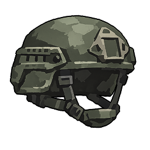
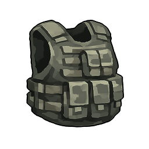
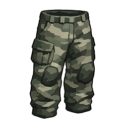
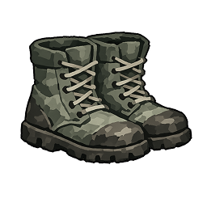
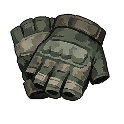

| Tier 1 common / gray | Tier 2 uncommon / emerald | Tier 3 rare / blue | Tier 4 epic / purple | Tier 5 legendary / yellow | Tier 6 mythic / red |
|---|---|---|---|---|---|
 helmet1; stats: none Tier 1 / common | helmet2; stats: none Tier 2 / uncommon | helmet3; stats: none Tier 3 / rare | helmet4; stats: none Tier 4 / epic | helmet5; stats: none Tier 5 / legendary | helmet6; stats: none Tier 6 / mythic |
 chest1; stats: none Tier 1 / common | chest2; stats: none Tier 2 / uncommon | chest3; stats: none Tier 3 / rare | chest4; stats: none Tier 4 / epic | chest5; stats: none Tier 5 / legendary | chest6; stats: none Tier 6 / mythic |
 pants1; stats: none Tier 1 / common | pants2; stats: none Tier 2 / uncommon | pants3; stats: none Tier 3 / rare | pants4; stats: none Tier 4 / epic | pants5; stats: none Tier 5 / legendary | pants6; stats: none Tier 6 / mythic |
 boots1; stats: none Tier 1 / common | boots2; stats: none Tier 2 / uncommon | boots3; stats: none Tier 3 / rare | boots4; stats: none Tier 4 / epic | boots5; stats: none Tier 5 / legendary | boots6; stats: none Tier 6 / mythic |
 gloves1; stats: none Tier 1 / common | gloves2; stats: none Tier 2 / uncommon | gloves3; stats: none Tier 3 / rare | gloves4; stats: none Tier 4 / epic | gloves5; stats: none Tier 5 / legendary | gloves6; stats: none Tier 6 / mythic |